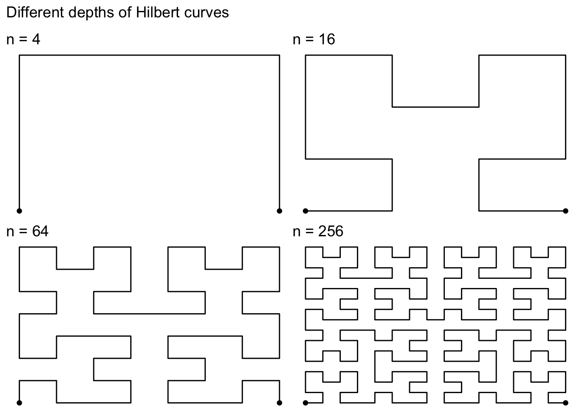
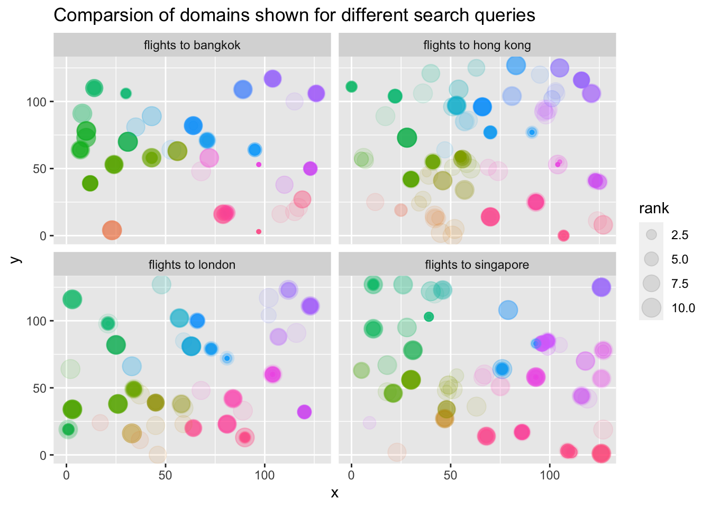

A Hilbert curve (also known as a Hilbert space-filling curve) is a continuous fractal space-filling curve first described by the German mathematician David Hilbert in 1891, as a variant of the space-filling Peano curves discovered by Giuseppe Peano in 1890 (from Wikipedia).
This package provides an easy access to using Hilbert curves in ggplot2.
Installation
You can install the development version from GitHub with:
# install.packages("devtools")
devtools::install_github("Sumidu/gghilbertstrings")Usage
The gghilbertstrings package comes with functions for fast plotting of Hilbert curves in ggplot. At it’s core is a fast RCpp implementation that maps a 1D vector to a 2D position.
The gghilbertplot function creates a Hilbert curve and plots individual data points to the corners of this plot. It automatically rescales the used ID-variable to the full range of the Hilbert curve. The method also automatically picks a suitable level of detail able to represent all values of ID.
The following figure shows different hilbert curves for different maximum IDs. 
Plotting random data
The most simple way to plot data is to generate an id column that ranges from 1 to n, where n is the largest value to use in the Hilbert curve. Beware: The ids are rounded to integers.
library(gghilbertstrings)
# val is the ID column used here
df <- tibble(val = 1:256,
size = runif(256, 1, 5), # create random sizes
color = rep(c(1,2,3,4),64)) # create random colours
gghilbertplot(df, val,
color = factor(color), # render color as a factor
size = size,
add_curve = T) # also render the curves
Performance
We run the creation of a coordinate system 10 times. This means creating 1 entry for every possible corner in the Hilbert Curve.
library(microbenchmark)
library(HilbertCurve)
library(tidyverse)
library(gghilbertstrings)
mb <- list()
for (i in 1:10) {
df <- tibble(val = 1:4^i,
size = runif(4^i, 1, 5),
# create random sizes
color = rep(c(1, 2, 3, 4), 4^(i - 1)))
values <- df$val
mb[[i]] <- microbenchmark(times = reps,
HilbertCurve = {
hc <- HilbertCurve(1, 4^i, level = i, newpage = FALSE)
},
gghilbertstrings = {
ggh <- hilbertd2xy(n = 4^i, values)
})
}
Useful example
We use the eliasdabbas/search-engine-results-flights-tickets-keywords data set on https://www.kaggle.com/eliasdabbas/search-engine-results-flights-tickets-keywords as an example for a simple analysis. We map the full search URLs to the Hilbert curve and then add points when the URL was present for a specific search term. By comparing resulting facets we can see systematic difference in which provides show up for which search term.

Link: https://www.kaggle.com/eliasdabbas/search-engine-results-flights-tickets-keywords under License CC0